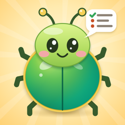

Your little helper that always remembers for you.
Just say it. It's listed. Like a June bug on the porch light, it keeps coming back. Just say it, and JuneBug brings it back to you.
JuneBug used to be called SaySo. Same app, same lists - nothing lost.
Say what you'd like to keep track of - your dog's shots, Mom's recipes, your medicines - and JuneBug makes the list for you, with the right boxes, dates and reminders. Fill it by talking, typing, or taking a picture of a card. Share it with family. On iPhone Duo and iPad it opens like a book.
Your lists are private. They stay on your phone and in your own iCloud - never on our servers, no account, no tracking, and nobody at JuneBug ever sees them. Only people you choose to share a list with can see that list. (On Android, everything stays on your phone only: JuneBug for Android doesn't use the internet at all.) Privacy Policy
Making a keeper from your words uses Apple Intelligence, on the device. If your iPhone doesn't have it turned on, every one of the 30 ready-made keepers still works, and so does everything else.
Sharing with family: open the list and tap Share at the top, then Share with family. iCloud needs to be on.
Nothing is lost by one tap: things you delete wait in Recently Deleted (Settings) until you put them back.
One Hot Summer: Pickwick Lake - learn to water ski on Pickwick Lake in the summer of 1990, or just ride along on a free boat tour of the lake. Free, no ads, nothing to buy.
Dialed In: Guitar Rigs - how about 90 great guitarists got their sound, with sources, plus starting settings for the amp you own at home. Free, no ads, nothing to buy.
Questions, problems or ideas: artjoyce@gmail.com